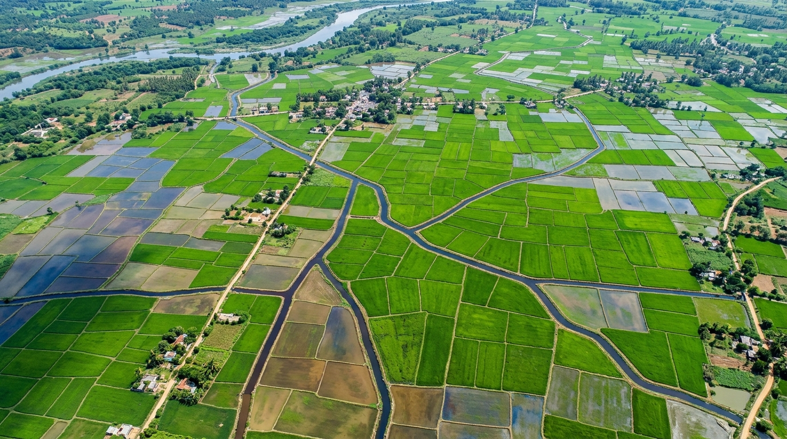

verified_user
Prototype Demonstration Data:
satellite_alt
Space & Weather Observations
Understand Your Crops Before Problems Grow.
Free space-based vegetative index and agrometeorological insights for Indian farmers.

satellite
Copernicus Sentinel-2 (ESA) Level-2A
calendar_today
24 Feb 2024 • Cloud-free Pass
Parcel #142/A
show_chart
NDVI 20-Day Trend (Sentinel-2)
Seasonal Benchmark: 0.70
04 Feb
0.68
09 Feb
0.66
14 Feb
0.63
19 Feb
0.61
24 Feb
0.58
pin_drop
Select Demo Field (Pan-India)
No login required
warning
ATTENTION • ACTION RECOMMENDED
Reference Agromet
Field Needs Inspection: Canopy Moisture Change
Status: Possible change in vegetative reflectance detected in the North-East zone. Requires physical ground verification before scheduling irrigation or chemical treatments.
1. What did we notice? (ಗಮನಿಸಿದ್ದು)
Vegetation index (NDVI) shows a localized drop of 12% in the North-East quarter.
2. What could it mean? (ಅರ್ಥವೇನು)
Possible uneven subsoil water percolation or clogged drip line.
3. What should I do next? (ಮುಂದೇನು)
Walk along NE boundary and press soil by hand to check moisture depth.
analytics
Vegetative Health Index (NDVI Reference)
0.58 (Dip of 12% vs. healthy benchmark 0.70)
Three Practical Field Actions
Tap tile to inspect
wb_sunny
Regional 3-Day Outlook (Open-Meteo Demonstration)
Demonstration
Day 1
sunny
31° / 21°
0 mm rain
Day 2
partly_cloudy_day
32° / 20°
0 mm rain
Day 3
cloud
30° / 22°
<1 mm rain
check_circle
Stable dry weather next 3 days. Suitable for weed clearing and ground parcel inspection.
support_agent
Kisan Call Centre (Toll-Free)
Free government agronomist consultation in your regional tongue